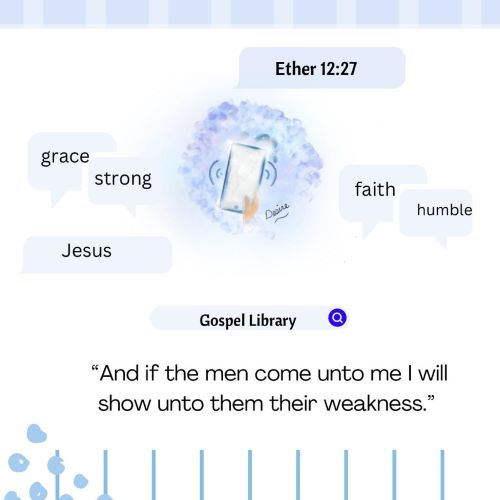
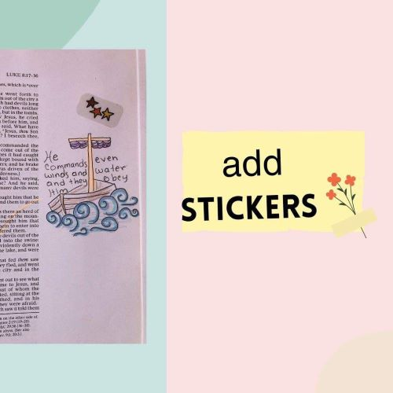
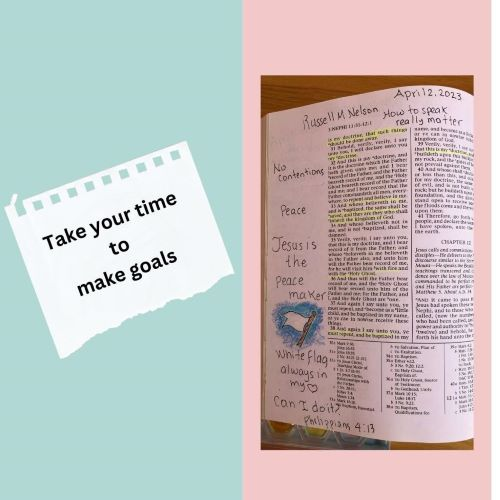
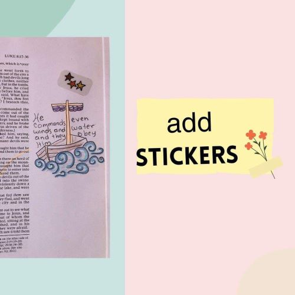
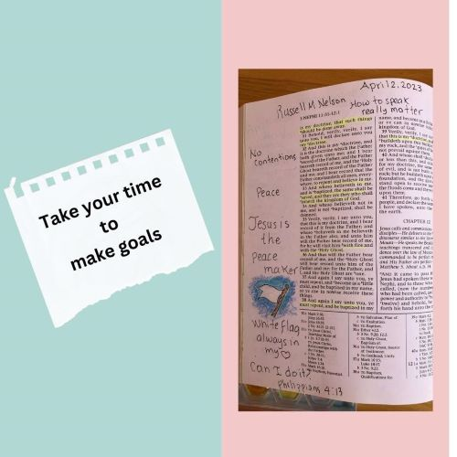

Why Scriptures Journalign?
Scripture Journalign transform the the way you study the word of God, and could begging with your favorite story from the Scriptures. It is not about how well you draw but how you perceive the word of God.
How to start a Scripture Journaling?
There some basic steps to do Scripture Journalign such as, A Scripture special edition with large margins. Look your favorite Scripture. Read about the context. Look for key words, underline it and look at the web for he meaning. Think about the central idea and how to visualize the the full concept. Then left your inner talent to make a general idea bout what o you want to draw. Take your pencil, colors and artistic supplies draw something that tells how do you feel about the Scripture.
Tips
Pray before start your study. Read, underline, make anotations, and analize the Scriptures. Look for the meaning of unfamiliar words. Reflect on the Scriptures. Think about one aplication. Choose your color palette Take hand of yor best art supplies, washi tape, stickers. Think about how you will use that ilustration. 


